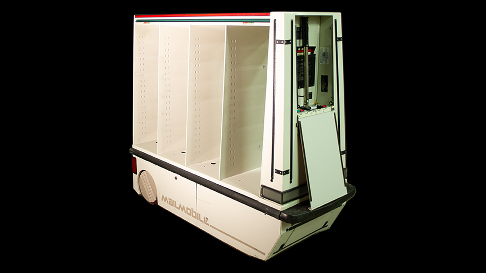

Mailmobile
The office mail cart that chased you down a chemical trail and gave you thirty seconds to grab your mail

Overview
The Mailmobile was a self-propelled, battery-powered mail-delivery robot built by Bell & Howell, a company better known for cameras and motion-picture equipment. It was essentially a mobile file cabinet on wheels: a few hundred pounds of steel and drive with locked shelves for mail, guided through office floors by following an invisible chemical guidepath. Rather than mapping the building or scanning it with sonar or vision, a technician laid a trail of ultraviolet-fluorescent dye along the carpeted route from the mailroom to each office stop, and the Mailmobile's sensor steered to keep that faint glowing line centered — a physical-world answer to 'software is a stripe painted on the floor.'
It was a genuinely commercial product, not a lab prototype. The Sears Tower (now Willis Tower) in Chicago was the first building in the world to employ one; Citibank, MassMutual, Northrop Grumman, State Farm, and the International Monetary Fund ran them too. At FBI Headquarters in Washington, the Administrative Services Division hired its own in June 1982 — a 600-pound unit named OBR III after Assistant Director Oliver B. Revell — capable of hauling 800 pounds of mail around the sixth floor and making a round in about thirty minutes, replacing two messengers who had completed the run every forty-five minutes.
Deep dive
The Mailmobile's defining engineering choice was to make its entire navigation a painted line. An ultraviolet-fluorescent dye was applied to the carpet along a route, and the robot followed the signal with its own sensor, steering to keep the line centered. When the FBI retired its Mailmobiles, remnants of OBR III's guidepath lingered on the sixth floor of Headquarters for years — a literal ghost line the machine once followed.
At each of roughly thirty stops the Mailmobile would beep and flash, and office staff had thirty seconds to step out, unlock the right shelf, and grab their mail before the robot wheeled itself on to the next stop. It was a scheduled, deadline-driven encounter between people and a machine that ran on its own stopwatch. Workers who grew fond of the units decorated and nicknamed them; OBR III gained decorative horns added by staff.
The Mailmobile was not a clean success story. It sometimes bumped into passing employees and occasionally stalled for hours, fouling the mail run. Its commercial run was short, but its cultural resonance proved oddly lasting: after a Mailmobile played a role on the FX series The Americans, public fascination surged, inspiring essays, internet threads, and even a Twitter account devoted to the machine. The FBI's surviving unit — 4'9'' long, 1'11'' wide, and 4'4'' high — still moves after a cleanup and fresh batteries, though it can no longer follow a guidepath.